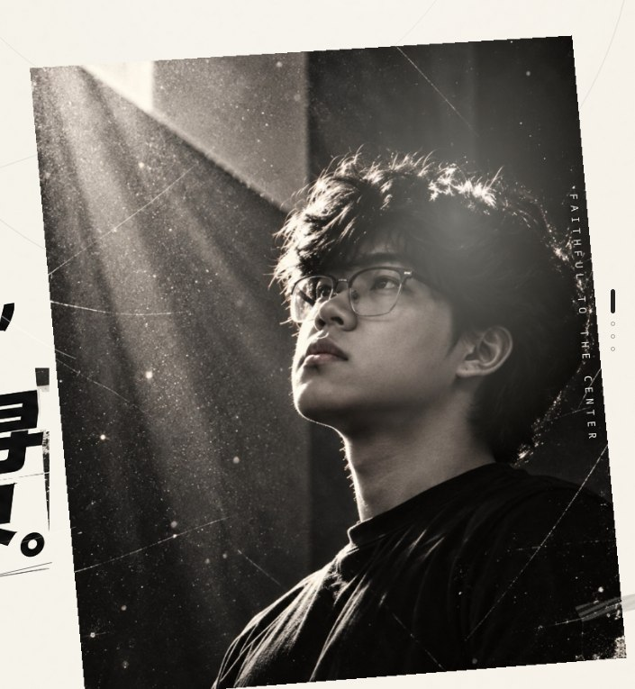
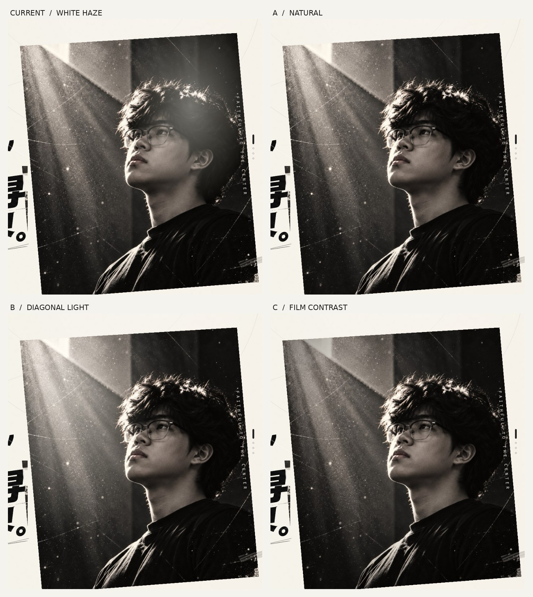
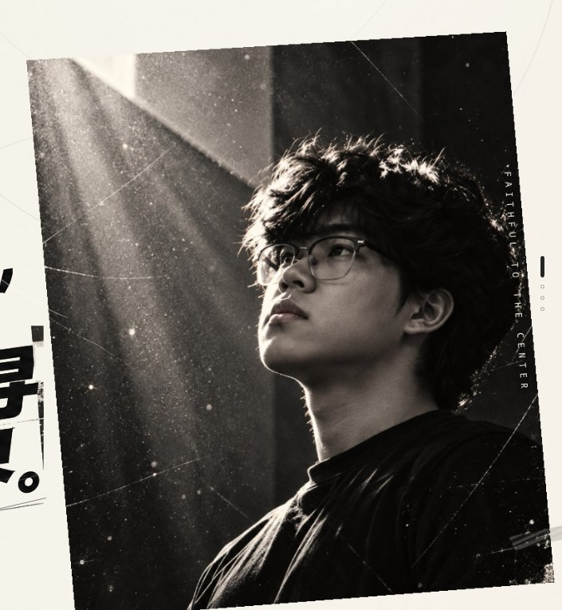
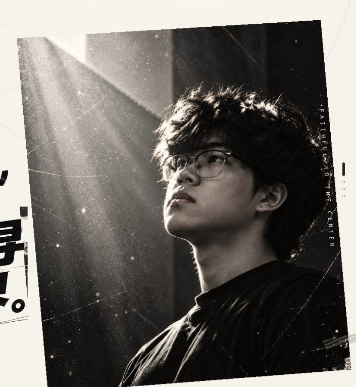
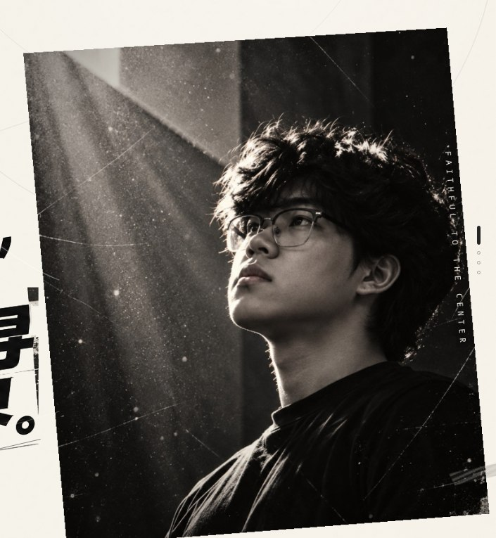

CURRENT / NOT RECOMMENDED

当前版本 · 白雾光斑
照亮整张脸，方向与原片左上斜射光不一致，人物肤色和胶片黑位被冲淡。这正是需要解决的效果。
查看完整海报同一张肖像、同一套首页构图，分别尝试三种不同的摄影光影语言。这里的重点不是让照片变亮，而是让光源可信、人物轮廓完整。
这是独立视觉评审页，不会覆盖原来 M01 首页。以下静帧模拟鼠标位于右侧摄影区域时的效果；点击可以查看整张海报。


照亮整张脸，方向与原片左上斜射光不一致，人物肤色和胶片黑位被冲淡。这正是需要解决的效果。
查看完整海报
照片不额外加光。保留原有的左上光束、发丝轮廓和面部阴影。鼠标交互主要交给文字与拼贴，最自然。
查看完整海报
光线集中在左侧墙面的已有斜光上，随鼠标轻微移动；脸部仍然保留阴影，不再出现一团漂浮的白雾。
查看完整海报
不额外加白光，改为细微收暗周围，让视线集中在人物眼神及原有逆光。更克制、更暗，电影感更重。
查看完整海报桌面端可以切换 A / B / C，把鼠标移到右侧照片上比较变化。这里是单独的效果模拟，不会修改正式版本。